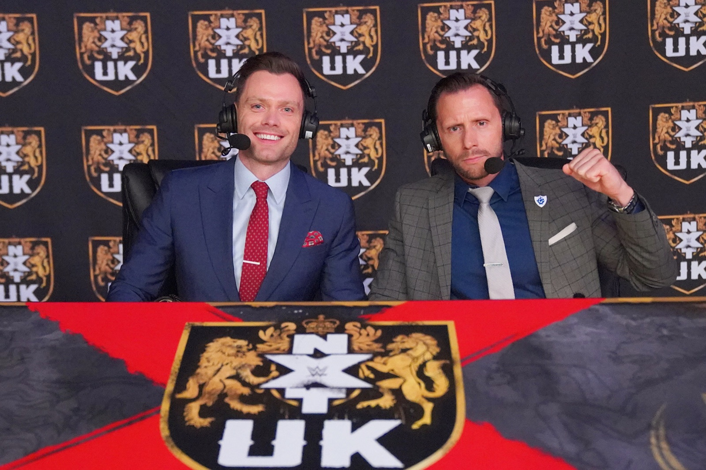
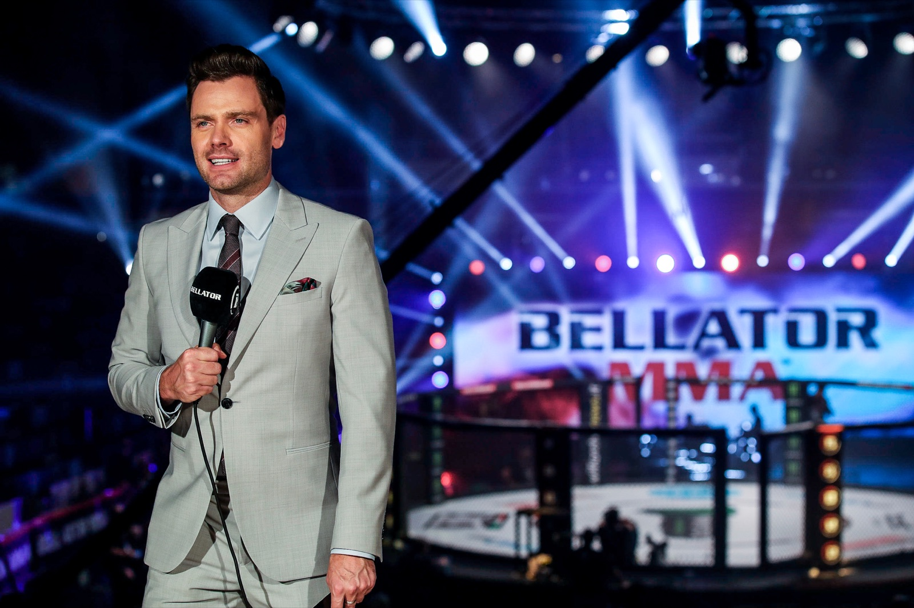
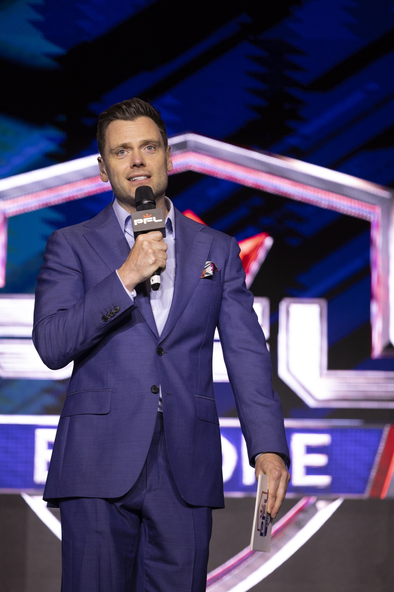
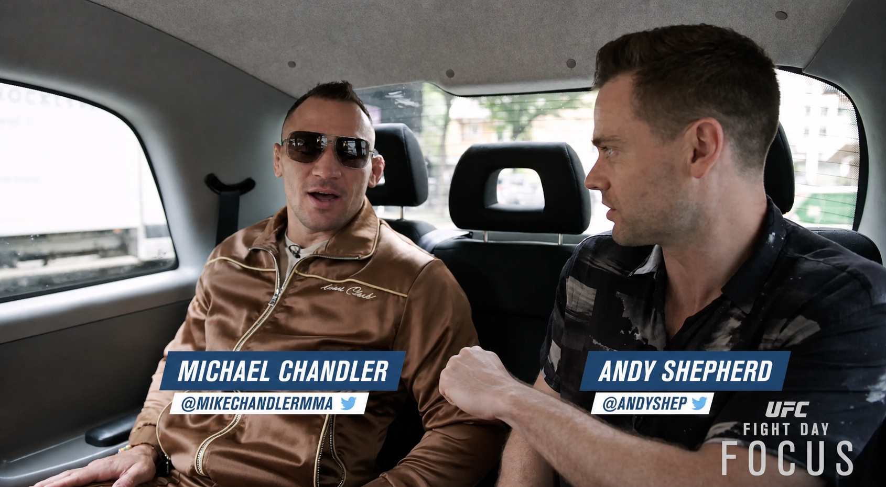
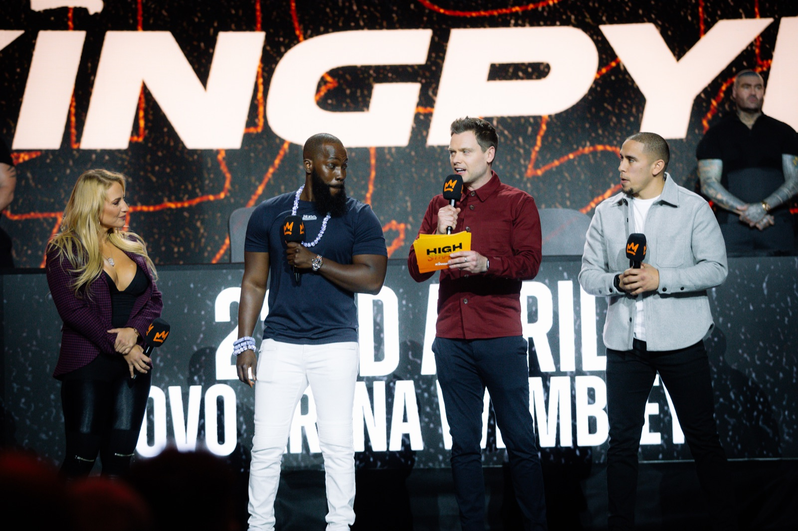

01
Live commentary
Play-by-play sports commentary and broadcast announcing for live sport and entertainment.

UK-based sports broadcaster, television presenter and commentator for live productions and events worldwide.


Experienced across UK and international sports broadcasting, from play-by-play commentary and studio presentation to interviews, ring announcing and live-event hosting.

Play-by-play sports commentary and broadcast announcing for live sport and entertainment.

Sports presentation, studio anchoring and on-air hosting for high-pressure live broadcasts.

Athlete interviews and presenter-led sports content for broadcast, social and digital audiences.

Live-event hosting, MC work, ring announcing and stage presentation for major events and brands.
Watch Andy Shepherd’s sports broadcasting showreel, featuring live presentation, commentary and interviews for TNT Sports, WWE, PFL and Floyd Mayweather events.
Watch on YouTubePFLUFCRed BullFor more than a decade, UK sports broadcaster Andy Shepherd has built his reputation in live television—fronting international broadcasts, calling the action and holding major shows together for WWE, PFL, UFC, Bellator, ESPN and TNT Sports.
Combat sports is a major part of that story, with extensive experience as a presenter, commentator, host and ring announcer. His work also extends across the wider sporting landscape—as a presenter and contributor for the BBC, and through World’s Strongest Man, Red Bull Cliff Diving and live events for leading global brands. That range makes him equally comfortable mastering a specialist brief or bringing a fresh, credible voice to a new sport.
His value goes beyond what happens in front of the camera. With a background in production, Andy understands the complete broadcast: the story being told, the demands of the running order, the needs of contributors and partners, and the decisions required when live television changes without warning.
Charismatic without overpowering the moment and authoritative without ever feeling scripted, he can carry a show, bring the best out of guests and analysts, and make complex live coverage feel effortless to the audience.
Andy is not simply hired to present one type of sport. He is trusted to help ambitious live sports television deliver.
Based in the UK and available internationally for sports commentary, television presentation, ring announcing, digital content and live-event hosting.